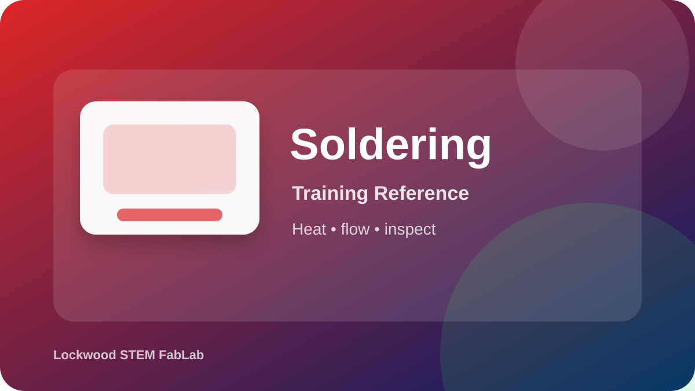

Learn how to assemble simple circuits, recognize polarity, solder safely, and inspect your work before powering a circuit.
A strong solder joint forms when the pad and component lead are heated together, then solder flows smoothly onto both surfaces. Rushing usually creates weak joints or bridges.
Where should a hot soldering iron be placed when not in use?
What should be inspected after soldering?
Why should a circuit be inspected before power is applied?
Use these media resources to preview the equipment and training expectations before you begin a hands-on check.
A classroom photo or diagram can be added here when available.
Review tools, safety, tinning, heating the joint, and what a good solder joint looks like.
Open video on YouTubeUse this to reinforce basic technique and common soldering mistakes.
Open video on YouTubeUse these visual references to identify the equipment and review the workflow before using the tool.

Equipment overview
Setup checkpoint
Safe cleanup
Use these videos as support before your hands-on classroom demonstration. Your teacher’s directions and FabLab safety rules always come first.